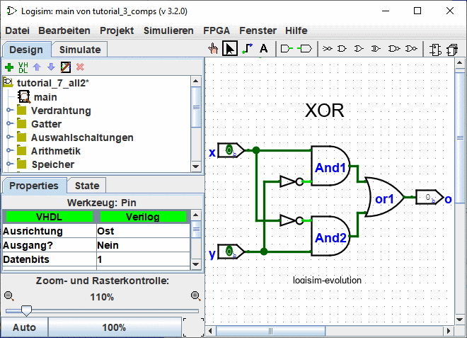
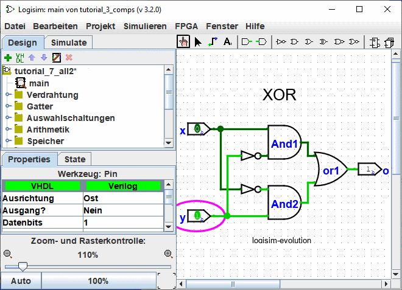

Früher: Schritt 3: Text hinzufügen
Schritt 4: Testen der Schaltung
Der letzte Schritt ist das Testen der Schaltung, um zu sehen, ob diese wirklich wie geplant funktioniert. Zu diesem Zeitpunkt simuliert Logisim bereits das Verhalten der Schaltung. Lassen Sie uns noch einmal ansehen, wo wir gerade waren.

Beachten Sie, daß beide Eingänge auf 0 gesetzt sind, und auch am Ausgang haben wir eine 0. Dies zeigt uns, daß unsere Schaltung schon eine 0 ausrechnet, wenn beide Eingänge auf 0 gesetzt sind.
Jetzt probieren wir eine andere Eingangskombination. Wählen Sie das Schaltwerkzeug ( ) aus, und schalten Sie die Eingänge um, indem Sie diese anklicken. Jedes Mal, wenn Sie einen Eingang anklicken, wird sich dessen Wert ändern. Wir können also zum Beispiel den unteren Eingang anklicken (y).
) aus, und schalten Sie die Eingänge um, indem Sie diese anklicken. Jedes Mal, wenn Sie einen Eingang anklicken, wird sich dessen Wert ändern. Wir können also zum Beispiel den unteren Eingang anklicken (y).

Sobald Sie den Wert am Eingang ändern, wird Logisim Ihnen anzeigen, welche Werte auf den einzelnen Leitungen geführt werden. Eine hellgrüne Leitung zeigt eine 1 an, eine dunkelgrüne (fast schwarze) Leitung eine 0. Sie können auch sehen, daß sich der Wert am Ausgang der Schaltung auf 1 geändert hat.
Bisher haben wir somit die ersten zwei Zeilen der Wahrheitstabelle getestet, und die Ausgangswerte (0 und 1) entsprechen unseren Erwartungen.
| x | y | x XOR y |
|---|---|---|
| 0 | 0 | 0 |
| 1 | 0 | 1 |
| 0 | 1 | 1 |
| 1 | 1 | 0 |
Durch Schalten der Eingänge durch die verschiedenen Kombinationen können wir auch die restlichen zwei Zeilen überprüfen. Wenn alles stimmt, sind wir fertig: Die Schaltung funktioniert!
Um unsere Arbeit zu archivieren, können Sie die Schaltung speichern oder ausdrucken. Die entsprechenden Funktionen finden Sie im menü | Datei |, das auch einen Punkt zum Beenden von Logisim enthält. Aber warum sollten wir jetzt aufhören?